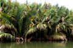

Common name : Water palm, water coconut
Common name in Telugu : Nipamu
Common name in Singhalese : Gin pol, gim pol

Diagnostic characters
Botany & morphology
Regeneration
Reproductive biology
Ecology
Distribution
Uses
Mangrove palm with creeping, horizontal stem from which dichotomous branches with erect tips arise. Leaves paripinnate. Flowers monoecious; fruits woody.
Leaves compound, paripinnate, petiole long with pulvinate base; leaflets linear - lanceolate, plicate, glaucous beneath, 5 – 6 m long.
Inflorescence terminal, arranged in catkins on lateral braches of the spadix.
Flowers unisexuals, monoecious; male flowers minute, mixed with bracteoles, female flowers large, arranged in globose terminal heads.
Fruit large fibrous drupe, syncarpous, lanceolate, brick-red, 6 to 15 cm long; seeds large, white.
Rhizome stout, subterranean, 5 to 7 m long.
Cryptovivipary germination.
Pollination by insects such as bees and small flies.
Associated with mud, mildly saline or brackish waters.
It occurs in Bangladesh, Burma, Malaysia, Philippines and extends up to Australia. In India it occurs in Andaman & Nicobar Islands and Sunderbans (Ganges delta). In Sri Lanka, found in the southwestern region.
Old leaves are used for thatching material and young leaves for cigarette - wrappers, the sap from the inflorescence stalk can be used to make toddy, vinegar or boiled down to sugar, young seeds are edible. In Burma and the Pacific islands, it is tapped for alcoholic drinks.
Top of the page